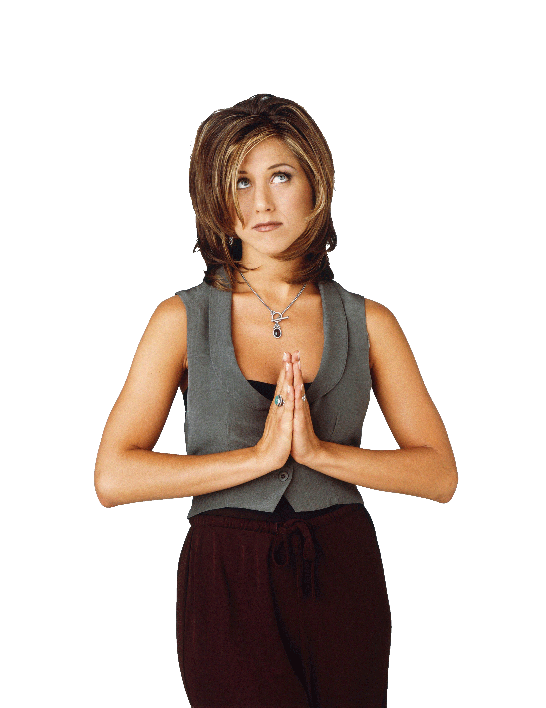
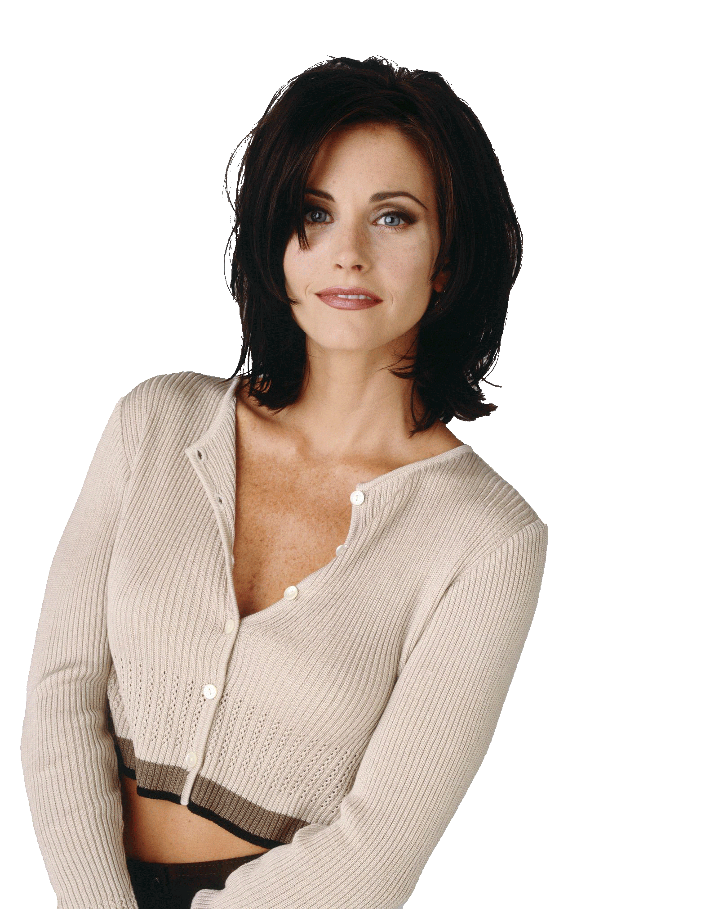
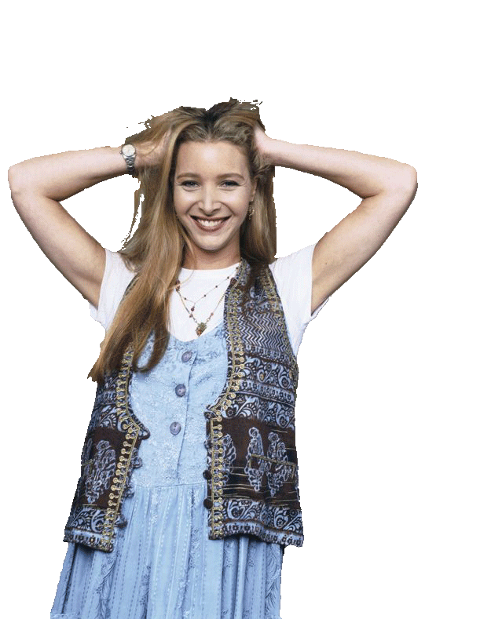
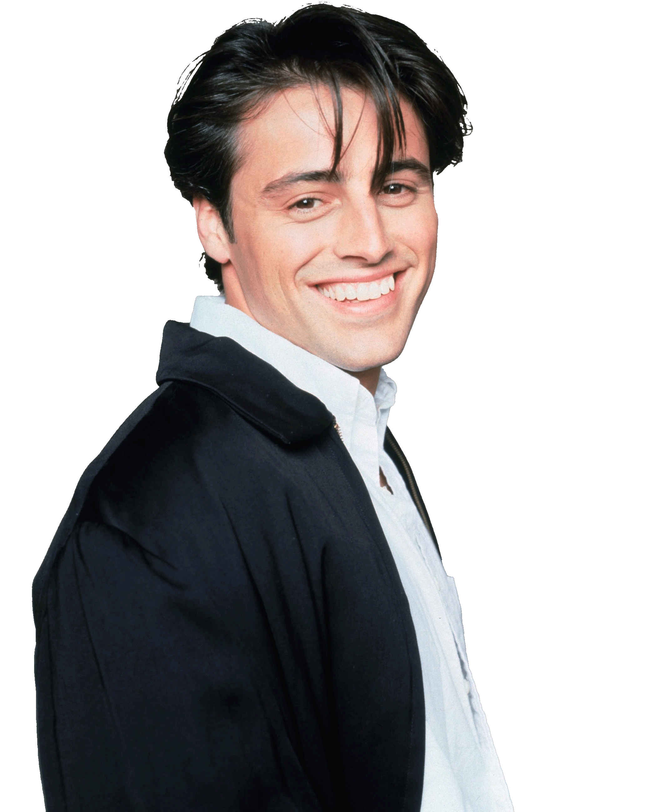
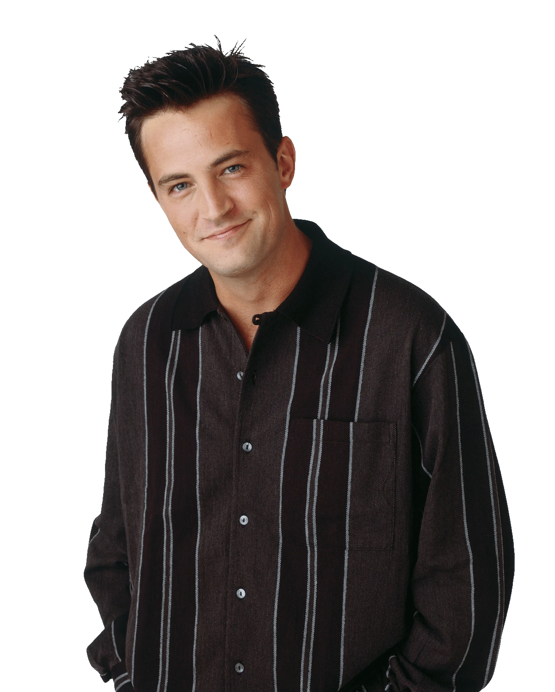
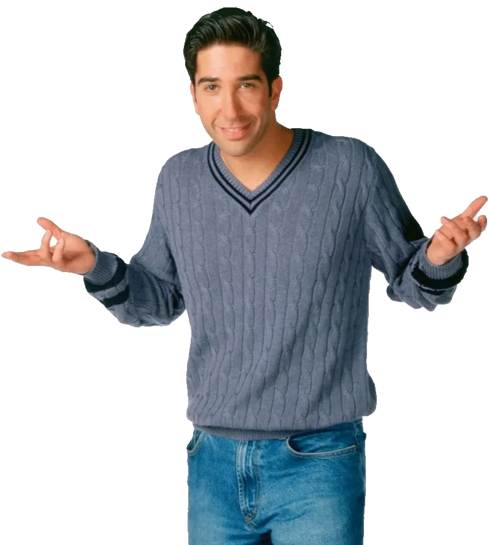

Characters

-
Jennifer Aniston as Rachel Green
A fashion enthusiast and Monica Geller's best friend from childhood. Rachel first moves in with Monica in season one after nearly marrying Barry Farber. Rachel and Ross Geller are later involved in an on-again, off-again relationship throughout the series. Rachel dates other men during the series, such as Italian neighbor, Paolo, in season one; Joshua Bergin, a client from Bloomingdale's, in season four; Tag Jones, her assistant, in season seven; and Joey Tribbiani, one of her close friends, in season ten. Rachel's first job is as a waitress at the coffee house Central Perk, but she later becomes an assistant buyer at Bloomingdale's in season three, and a buyer at Ralph Lauren in season five. Rachel and Ross have a daughter named Emma Geller-Green in "The One Where Rachel Has a Baby, Part Two" at the end of season eight. In the final episode of the series, Ross and Rachel confess their love for each other, and Rachel gives up a dream fashion job at Louis Vuitton in Paris to be with him. Although never explicitly identified as such, the character has been described as embodying the stereotype of a "Jewish american princess." -
Courteney Cox as Monica Geller
The "mother hen" of the group and a chef,known for her perfectionist, bossy, competitive, and obsessive-compulsive nature.Monica was overweight as a child. She had a bat mitzvah as a teenager. She works as a chef in various restaurants throughout the show. Monica's first serious relationship is with a long-time family friend Richard Burke, who is 21 years her senior. The two maintain a strong relationship for some time until Richard expresses that he does not want to have children. Monica and Chandler Bing, one of her best friends, later start a relationship after spending a night with each other in London in the season four finale, leading to their marriage in season seven and the adoption of twins Jack and Erica Bing at the end of the series. A running gag in the show is Chandler's easy-going and humorous nature conflicting with Monica's high-maintenance and compulsive behavior. -

-
Courteney Cox as Monica Geller
The "mother hen" of the group and a chef,known for her perfectionist, bossy, competitive, and obsessive-compulsive nature.Monica was overweight as a child. She had a bat mitzvah as a teenager. She works as a chef in various restaurants throughout the show. Monica's first serious relationship is with a long-time family friend Richard Burke, who is 21 years her senior. The two maintain a strong relationship for some time until Richard expresses that he does not want to have children. Monica and Chandler Bing, one of her best friends, later start a relationship after spending a night with each other in London in the season four finale, leading to their marriage in season seven and the adoption of twins Jack and Erica Bing at the end of the series. A running gag in the show is Chandler's easy-going and humorous nature conflicting with Monica's high-maintenance and compulsive behavior. -

-
Lisa Kudrow as Phoebe Buffay
A masseuse, vegetarian and self-taught musician. As a child, Phoebe lived in upstate New York with her mother Lily Buffay, until her mother committed suicide and Phoebe took to the streets. She writes and sings her own strange songs, accompanying herself on the guitar. She has an identical twin named Ursula Buffay, who shares few of Phoebe's traits. Phoebe has three serious relationships over the show's run: David, a scientist, in season one, with whom she breaks up when he moves to Minsk on a research grant; Gary, a police officer whose badge she finds, in season five; and an on-and-off relationship with Mike Hannigan in seasons nine and ten. In season nine, Phoebe and Mike break up due to his desire not to marry. David returns from Minsk, leading to the two getting back together, but she eventually rejects him for Mike when both of them propose to her. Phoebe and Mike marry in season ten. -
Matt LeBlanc as Joey Tribbiani
A struggling actor and food lover who becomes famous for his role on soap opera Days of Our Lives as Dr. Drake Ramoray. Joey has many short-term girlfriends. Despite his womanizing, Joey is innocent, caring, and well-intentioned. Joey often uses the catchphrase pick-up line "How you doin'?" in his attempts to win over most of the women he meets. Joey rooms with his best friend Chandler for years, and later with Rachel. He falls in love with Rachel in season eight, but Rachel politely tells Joey that she does not share his feelings. They eventually date briefly in season ten, but after realizing it will not work due to their friendship and Rachel's complicated relationship with Ross, they return to being friends. At the end of the series, he is the only remaining single member of the group, and becomes the main protagonist of the sequel series Joey. -

-
Matt LeBlanc as Joey Tribbiani
A struggling actor and food lover who becomes famous for his role on soap opera Days of Our Lives as Dr. Drake Ramoray. Joey has many short-term girlfriends. Despite his womanizing, Joey is innocent, caring, and well-intentioned. Joey often uses the catchphrase pick-up line "How you doin'?" in his attempts to win over most of the women he meets. Joey rooms with his best friend Chandler for years, and later with Rachel. He falls in love with Rachel in season eight, but Rachel politely tells Joey that she does not share his feelings. They eventually date briefly in season ten, but after realizing it will not work due to their friendship and Rachel's complicated relationship with Ross, they return to being friends. At the end of the series, he is the only remaining single member of the group, and becomes the main protagonist of the sequel series Joey. -

-
Matthew Perry as Chandler Bing
An executive in statistical analysis and data reconfiguration for a large multinational corporation. Chandler hates this job, although it pays well. He attempts to quit during season one but is lured back with a new office and a pay raise. He eventually quits this job in season nine due to a transfer to Tulsa, Oklahoma. He becomes a junior copywriter at an advertising agency later that season. Chandler has a peculiar family history, being the son of an erotic novelist mother Nora Tyler Bing and a gay, cross-dressing Las Vegas star father Charles Bing. Chandler is known for his sarcastic sense of humor, bad luck in relationships, and tendency to be the butt of all jokes.Despite this, he is still kind and usually serves as the voice of reason in contrast to his more arrogant and selfish friends. Chandler marries Monica, one of his best friends, in season seven, and they adopt twins at the end of the series. Before his relationship with Monica, Chandler dated Janice Hosenstein in season one and subsequently broke up with her many times. -
David Schwimmer as Ross Geller
Monica's "geeky" older brother, a PhD palaeontologist working at the American Museum of Natural History, and later a tenured professor of palaeontology at New York University. Ross is involved in an on-again, off-again relationship with Rachel throughout the series. He has three failed marriages during the series: Carol Willick, a lesbian who is also the mother of his son, Ben Geller, with whom he tries to share his Jewish heritage; Emily Waltham, who divorces him after he accidentally says Rachel's name instead of hers during their wedding vows; and Rachel, as the two drunkenly marry in Las Vegas. His divorces become a running joke within the series. Following a one-night stand, he and Rachel have a daughter, Emma, by the end of season eight. They finally confess that they are still in love with each other in the Season 10 series finale. -

-
David Schwimmer as Ross Geller
Monica's "geeky" older brother, a PhD palaeontologist working at the American Museum of Natural History, and later a tenured professor of palaeontology at New York University. Ross is involved in an on-again, off-again relationship with Rachel throughout the series. He has three failed marriages during the series: Carol Willick, a lesbian who is also the mother of his son, Ben Geller, with whom he tries to share his Jewish heritage; Emily Waltham, who divorces him after he accidentally says Rachel's name instead of hers during their wedding vows; and Rachel, as the two drunkenly marry in Las Vegas. His divorces become a running joke within the series. Following a one-night stand, he and Rachel have a daughter, Emma, by the end of season eight. They finally confess that they are still in love with each other in the Season 10 series finale.